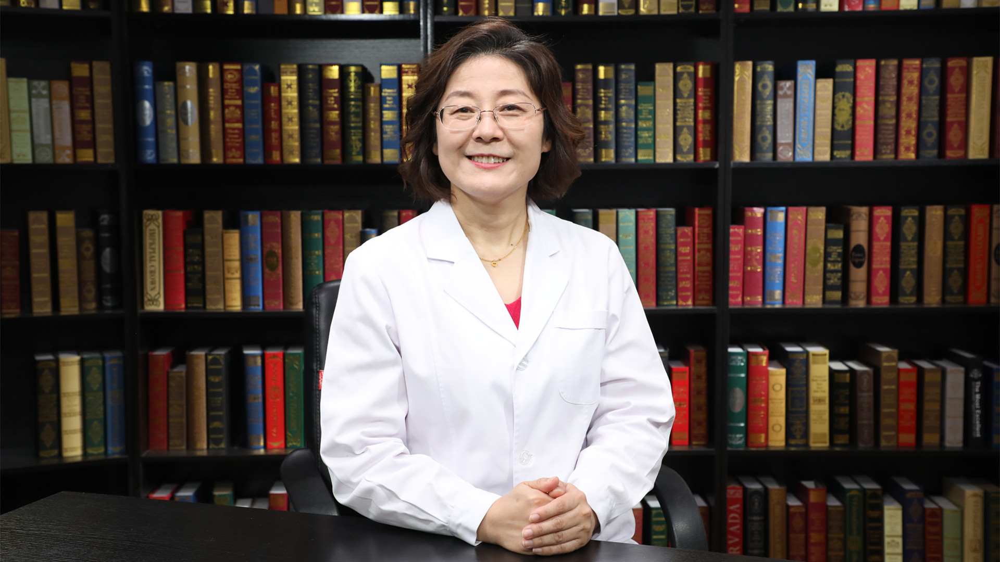

1.124 孕期水肿¶
邹丽颖 主任医师¶

首都医科大学附属北京妇产医院产一科副主任 主任医师 医学博士 硕士生导师；
中华医学会医疗事故鉴定专家委员会成员；中国医师协会妇产科医师分会医疗安全委员会委员；中国医药教育协会母婴健康管理专业委员会常务委员；中国药学会第一届药学服务专业委员会委员；北京医学会早产与早产儿医学分会常务委员。
主要成就： 发表SCI及核心期刊论文30余篇；致力于围产医学、妊娠期糖尿病、早产相关的基础与临床研究。系列研究获得全国妇幼健康科技奖，获得国家级项目2项，省部级项目2项；参与撰写产科指南3部；主编、副主编出版书籍3部。
专业特长： 擅长围产期保健、高危妊娠的管理以及孕产妇心理保健；尤其擅长妊娠期糖尿病的诊断、监测及围产期管理；早产的基础及临床研究；宫颈机能不全的诊断及治疗；妊娠期高血压疾病的预防、诊断及治疗；胎儿生长受限的诊治。
孕期为什么容易出现水肿？¶
（采访）主任，很多孕妈妈在怀孕的时候，她可能会有腿肿、脚肿这种水肿的情况，为什么在孕期会发生这种水肿呢？
其实肿的发生，它就涉及到整个体液的循环，因为人体里面有一大部分的组成部分，就是我们的体液，是水。水的循环我们一方面摄入，一方面排出，如果某一个环节发生问题，就淤积在那了，就导致水肿了。
对于孕妇来说，除了孕妇自己代谢的需要以外，她还要保证胎盘的循环，还要保证孩子的需要，所以其实孕妇的血容量是增加的。血容量的增加可能就会导致整个体液的储存就多了，有的孕妈妈就觉得手胀、脚胀。早晨一起来手就胀，活动以后才好起来，也就是血液循环起来才好起来，这个不叫真正的肿。
您说的腿肿、脚肿，好多是和怀孕有关系，这个肿好多时候是因为，一个是血容量增加引起来的水钠潴留；再有一个是和增大的子宫压迫有关系，该回流的血液回流不回来，它淤积在局部了，引起水肿，这个就是生理性的水肿，就是怀孕引起来的，比如压迫。还有激素水平改变引起的水钠潴留，这些因素引起来的水肿。
还有一部分水肿是由于妈妈发生了某些疾病导致了水肿，比如妈妈发生妊娠期高血压疾病，或发生了肾脏的疾病，这些疾病影响到体液的循环，破坏了正常的体液循环过程的时候，就以水肿作为表现。比如说有的孕妈妈出现肿了，紧接着血压就高起来了，她就有可能是由于妊娠期高血压疾病导致了水肿。
还有一些孕妈妈可能早孕期很早就出现肿了，这个时候她可能肾脏基础有问题导致水肿的问题。当然还有一些疾病也跟水肿有关，比如说心脏出现问题了，也有可能出现水肿。
其实我们在临床上，在孕期的水肿，第一，不是所有人都发生；第二，不是发生的都是生理性，有一部分和疾病有关。临床上是要加以甄别的。
（采访）主任，像生理性的水肿，是不是生完宝宝之后就好了？
是这样的。坐月子的时候可能就会有感觉，特别容易出汗，出很多汗，还特别容易上厕所，上厕所特别频繁，那就是在排出这些过多积聚的体液，肿就消下去了。
怀孕几个月时容易出现生理性水肿？¶
（采访）主任，生理性的水肿一般会在孕几周的时候出现？
一般来说生理性的水肿都发生在孕中晚期，尤其是孕晚期，也就是孕28周以后。一个就是这个时候体液越来越多了，它容易积聚在某一个位置。再有一个就是到这个孕周，尤其是孕28周以后，子宫就很大了，它压迫到下腔静脉，就是血液回流的一条管道被压住了，它就变得运输能力没那么好了。就等于是血液在该运回来的时候运不回来，积聚在下肢，就引起下肢的水肿。
水肿多数是发生在孕中晚期，以孕28周以后最多见，当然并不是28周一定发生，有可能一直没发生，到孕30周、孕34周，甚至于到孕三十七八周才发生，都是有可能的。但是还有一部分妈妈一直在做运动，也没有什么问题，都很好，她不发生水肿，也是正常的。
（采访）主任，生理性的水肿是只会发生在下肢，就是腿脚吗？
一般来说生理性的水肿只发生在下肢，最多的时候延到大腿，就已经是很严重的了，一般局限在脚和小腿，这种叫生理性的。
（采访）主任，是不是如果是在孕28周之前出现的一些水肿，就要怀疑可能是病理性的？
也不一定，因为孕中晚期都有可能发生水肿。比如说有一些孕妈妈的工作是需要长期地站立，比如老师，或者是比如坐办公室，下肢一直垂在下面，活动得很少，坐一天的时候就有可能体液回流受影响了，最低的位置就是液体积聚的位置，就发生水肿了，有些孕妈妈在孕28周之前就发生了。
尤其是老不活动的孕妈妈，体重增加多，又老不活动的孕妈妈，有可能只是一个生理性水肿，但是发生在孕28周前。但是一般来说都是在孕中晚期，就是在孕12周以后，但是多数发生在孕28周以后。
为什么有的孕妇会水肿，有的孕妇不会水肿？¶
（采访）主任，为什么有的孕妈妈就会水肿，有的孕妈妈就不会呢？
其实是不是发生水肿，跟孕妈妈的自身情况是有一定关系的。比如有的孕妈妈一直在运动，活动得比较好，她的血液循环系统功能特别强大，她的静脉瓣功能也都特别好，她就能保证血液一直在循环起来，就不容易在某一个部位积聚，不容易水肿。
有的孕妈妈静脉瓣的功能也不好，自己又不活动，不活动的情况下，她的血液循环不起来，积聚在局部的水就带不走。尤其是越低的位置越容易积聚，低的位置就是脚、腿，坐着的时候，这个位置积聚的水带不走，就在局部肿起来了。
所以水肿一个是跟妈妈孕期的体重增长情况、运动情况有关系，和妈妈本身有没有一些疾病也有关系。比如孕妈妈一活动起来了，她肌肉的运动就会促进血液循环，反倒不容易发生水肿的情况，所以其实跟孕妈妈自身的基础情况和孕期整体的生活状态都有一定的关系。
孕期出现水肿和年龄有关系吗？¶
（采访）主任，发生孕期水肿和年龄有没有关系呢？
有关系。一般来说相对年龄大的人，她各方面的肌肉的功能，静脉瓣的功能，都会有一点影响，而且发生并发症的可能性也会增加。所以年龄大的孕妈妈，发生水肿的可能性会更大。
再有年龄过小的孕妈妈，其实也是容易发生水肿的，就是比较适龄的孕妈妈，反倒是最容易平稳度过的。年龄过小，其实也是发生水肿，发生各种并发症的一个高危人群，所以年龄过大、过小都有可能发生。
可能现在这种二孩政策下，年龄大的，尤其是年龄过大的经产的孕妈妈会更多一点，她们是发生孕期水肿的一个高危人群，有可能是生理性的，也有可能是病理性的。
孕期出现水肿和喝水多有关系吗？¶
（采访）主任，孕期水肿跟喝水多有没有关系？会不会是孕妈妈平时喝水量比较大，她就更容易肿呢？
其实会不会发生水肿，主要是看我们水的平衡是不是好，也就是我们喝得多，水排出去了，她也不会水肿。所以水肿和喝水量并不是直接相关的。主要是还看自己循环的功能，就是能不能让进来的水循环起来。
再有一个就是排出功能是不是好，喝得多，排得也多，能保持平衡，就不会引起这种额外的水肿。所以一般来说，水肿和喝水是没有关系的。除非肾脏功能有问题，肾脏功能有问题的人是限水的，喝多了排不出去，就会在体内积聚。
孕期水肿对胎儿有影响吗？¶
（采访）主任，如果发生了孕期水肿，对胎儿会不会有影响呢？
一般来说生理性的水肿，单纯的妈妈各方面情况都很好，只是每天晚上脚胀、腿胀这种水肿，是不会影响宝宝的生长发育的，也不会影响宝宝的健康的，我们叫生理性水肿。
但是如果有一些疾病导致的水肿，比如说妊娠期高血压疾病，比如说肾脏疾病，它是会对宝宝的生长发育造成影响的。不是水肿造成的，而是说这个疾病造成的宝宝生长发育异常，同时会引发水肿的症状。所以要区别是什么原因引起的水肿。
孕期生理性水肿需要治疗吗？¶
（采访）主任，对于孕期生理性的水肿，要不要治疗？
一般来说，严重的生理性水肿也是要干预的。其实在生活上稍微注意一下，是能解决生理性水肿问题的。因为它毕竟是和比如长期一个姿势坐着，生理性体液增加有关，这个是改变不了的。怎么让这些体液循环起来，最大化地利用起来，这样才有利于怀孕的过程。
常规产前检查的时候，会常规地查孕妇有没有水肿，有水肿的孕妇我们会跟她讲，一个就是在真正休息的时候，别久坐久站，不要老坐着或者是老站着，必要的时候多换换体位，隔一会儿站起来走一走，活动活动，这些都有利于减轻水肿。还有一个就是白天坐着、站着的时间比较久的时候，等休息下来或者傍晚的时候，把下肢抬高，给下肢一个静脉回流的机会。
如果特别严重的这些，其实还可以在早晨起床的时候，在没发生水肿的时候，穿一个弹力袜，这个都有利于减轻水肿，所以其实是有干预措施能解决生理性水肿的，我们还是要干预。
（采访）主任，对于孕期生理性的水肿，会不会到用药治疗干预的这种情况呢？
一般是不需要用药的，因为它是一个生理性的改变，只不过身体没有让血液循环起来，所以它才积聚在某一个部位，只要把这个循环推动起来，就可以解决这个问题，一般是不需要药物治疗的。
（采访）主任，孕期水肿会不会随着孕周越来越大，它越来越严重？
其实从理论上来说，因为随着孕周的增加，她身体里的液体量多了，容易发生水钠潴留。但是如果我们不进行任何干预的话，就会这样。就是随着孕周的增加，水肿可能会加重。
但是好多时候现在孕期保健做了，孕妈妈发现水肿了，我们及时去告诉她，指导她运动，必要的时候让她穿上弹力袜，反倒水肿不再加重。所以如果是一个自然过程，我们不做任何干预的过程，随着孕周的增加，水肿会加剧。
怎么缓解孕期生理性水肿？¶
（采访）主任，缓解孕期生理性水肿的方法都有哪些呢？
一个良好的生活习惯，会帮助我们减轻生理性水肿。首先生理性水肿是由于增大子宫压迫引起来的，尽量减少这种压迫的时间，比如说每天要保证足够的休息，休息的时候让她左侧卧位，改善一下下腔静脉受压的情况，也改善胎盘循环，这样的话血液循环起来会减轻水肿。
另外就是在饮食上不要吃太多咸的食物，因为这种食物也会容易引起体液过多。还有就是保证足够的蛋白质摄入，因为体液里面，怀孕以后会有一个血浆白蛋白的下降，这个是维持血管内血液的一个特别必要的东西，所以还要吃一些优质蛋白，蛋、奶这些都是优质蛋白。这种饮食也有利于减轻水肿。
再有就是不要久坐久站，不要老是一个姿势待着，老是一个姿势待着，尤其是老是久坐久站，就会让下肢的血液没有机会运送回来，就是被压迫得比较厉害。所以隔一段时间改变体位走动一下，就有利于减轻水肿的发生。再有就是适当活动，适当锻炼的时候，有利于肌肉的收缩，有利于促进血液循环，所以每天保证适当的运动，也是减轻水肿很重要的一点。
再有一到晚上的时候，或者是比如久站久坐，觉得下肢有点发胀的时候，可以选一个躺着、半坐卧位的姿势，把脚抬高一点，给下肢的静脉有一个回流的时间。再有比如说晚上回来的时候，肿得厉害，家里人能帮着适当地按摩一下下肢也是可以的，也是能促进血液循环的。
再有比如说改变不了上班老得久坐久站这种情况，一站得多或者坐得时间久就肿。可以在早晨起来没有活动之前，先穿上一个弹力袜，预防性的那种压力的弹力袜就可以，穿上弹力袜再活动，回家以后再把弹力袜脱掉，它也是能减轻水肿发生的一个方法。
怎么判断孕期水肿是不是正常？¶
（采访）主任，对于孕期出现的水肿，是生理性水肿还是病理性水肿，怎么样来区分呢？
生理性水肿和病理性水肿的区分，一般来说要从几个方面判断。一个是发生孕周，一般来说生理性水肿都是发生在孕中晚期，尤其是在孕晚期，也就是孕28周以后。病理性水肿有可能在比较早的时候就发生，比如说刚早孕的时候就发生，早晨起来眼皮是肿的，这个一定不是生理性水肿。
再有一个就是看水肿的性质，有的时候她水肿，一摁一个坑，休息以后就没了，这种多数有可能是生理性水肿。但是如果觉得哪都肿，但是一摁没有坑的时候，有可能，并不是说一定，有病理性水肿的这种可能性。
还有就是生理性水肿的时候，通常只是到下肢就截止了，就不会再引起全身的水肿。但是如果比如说眼睑也肿了，全身都肿了，或者是都出现腹水了，一般就不是生理性水肿引起来的了。
还有就是看休息以后能不能缓解。有的时候脚肿，鞋都得大两号才能穿进去，活动以后，等休息一晚上以后就好了，第二天久站久坐又发生了，这种多数是生理性水肿，就是休息以后能缓解。如果是病理性水肿，休息以后是不缓解的。这也是来区分生理性水肿和病理性水肿的一个情况。
还有一个要看有没有其他的伴随症状，比如说生理性水肿只是肿，没有其他的问题，别的都不受影响。但是病理性水肿有可能出现血压高，出现这些问题。
所以其实在临床上孕妇自己去甄别，有时候就会比较困难，有的时候可能会借助医生帮助判断，医生的一些检查或者是一些辅助检查来帮助判断，来区分是生理性水肿还是病理性水肿。
（采访）主任，对于孕期这个病理性的水肿，是不是要去治疗引起水肿的疾病呢？
是这样的，因为病理性水肿，水肿对于这个疾病来说只是临床表现之一，真正会对于妈妈身体带来伤害的是这个疾病本身。所以好多时候水肿只是一个信号，提示我们会不会发生了这些问题。我们通过这个信号来进一步明确孕妇有没有出现一些病理情况，如果有，一定要治疗，避免它会威胁到妈妈或者宝宝的健康。
孕期病理性水肿会影响胎儿发育吗？¶
（采访）主任，孕期病理性的水肿，会不会影响胎儿的发育呢？
要看引起病理性水肿的原因是什么，如果病理性水肿的原因是，比如说妊娠期高血压疾病，她的水肿只是她的临床表现之一，但是这个疾病本身会影响到孩子的健康。还有比如说一些肾脏疾病，孕妇本身存在肾脏疾病，她也可能表现的是水肿，但是这个肾脏疾病本身会影响孩子的健康。
所以好多时候水肿只是临床表现之一，不是导致孩子不良结局的原因，但是水肿提示的这个疾病，有可能会影响孩子的生长发育。
孕期病理性水肿，需要提前终止妊娠吗？¶
（采访）主任，病理性的孕期水肿会不会导致终止妊娠的情况呢？
如果导致病理性水肿的疾病，很严重的情况下，是有可能要终止妊娠的，比如说妊娠期高血压疾病发生得很早，很早就发生了全身严重的水肿，疾病也进展得特别快，有可能就早点要终止妊娠，因为要出于对大人健康的考虑，对妈妈健康的考虑。
还有一些疾病进展得很快，孩子有机会存活了，我们也要差不多的时候，找一个合适的时机就终止了，这也算提前，因为没有到孕足月，不算瓜熟蒂落的自然分娩。因为这个疾病，可能要提前终止。所以其实要不要提前终止，主要是看引起水肿的原发病的严重程度，是有可能要提前终止的。
预防孕期水肿，生活中需要注意什么？¶
（采访）主任，对于孕期水肿，怎么样来预防呢？
一般来说怀孕了以后，要关注自身的一个体重增长情况，因为有些孕妈妈体重长得快是自己长肉，但有些孕妈妈其实是一个隐性水肿，没有表现出来的一个水肿。
如果说短期内体重增加特别厉害，或者自己发现有水肿的情况，可以及时在产前检查的时候去咨询医生，医生来给咱们区别到底是一个生理性水肿，还是病理性水肿，怎么样让它不再进展或者减轻，可以及时地咨询医生。
再有一个，从饮食上，妈妈还是尽量少吃那种特别浓重口味的，比如咸等等这些口味，还要保证每天的优质蛋白的摄入，蛋、奶，还有白肉这些优质蛋白的摄入要能保证。
再有就是适当地运动很重要，适当地运动既有利于妈妈控制体重，又有利于全身的血液循环起来，减轻水肿。
再有一个就是穿舒适的鞋袜，比较合脚的，因为孕期水钠潴留，妈妈会有手胀、脚胀的情况，可能鞋号会比以往大一号，这个情况其实是正常的，就要穿一双合脚的鞋。
有可能为孕期要单买一双合脚的鞋，有一定的宽松度，就是穿进去鞋以后顶到顶，后边的空间正好能放进一个手指，这个宽松度就比较合适。尤其是对于孕妇买鞋，可能要放在下午去买，因为一天活动以后，脚会稍微胀一点，这个时候以这个度，买一双宽松的舒适的鞋。
穿裤子也尽量不要穿太紧身的，当然你要有水肿了，要穿弹力袜，那是另外的情况，它是靠弹力的作用来维持。但是正常自己穿的时候，不要有那种束缚特别紧的松紧带的衣服，穿相对宽松舒适的衣服，这个也有利于减轻水肿。
再有一个就是到了孕中期以后，睡觉的时候都要左侧卧位睡。有些孕妈妈左侧卧位睡不舒服，胎动很频繁，或者都睡不着觉，右侧卧位睡也行。但是尽量不要平躺，因为平躺的情况下会影响血液循环，也有可能加重水肿。
再有一个就是避免久坐久站，对于孕妈妈来说，有些工作不得已，就必须坐着或者必须站着，孕妈妈就隔个大概三四十分钟起来活动活动。不要久坐久站，这也有利于减轻水肿，主要是从这几方面要注意。
出现水肿的孕妇，选择衣服和鞋袜时需要注意什么？¶
（采访）主任，对于在孕中晚期发生了生理性水肿的孕妈妈，她们在穿衣服或者穿鞋袜上，有没有什么要注意的呢？
对于孕妈妈来说，穿衣、穿鞋真的是挺重要的。对于有水肿的孕妈妈来说，她一定要穿一双合脚的鞋，因为这个鞋如果不合脚的话，对脚产生束缚以后，它反倒影响血液循环。
影响血液回流以后，就会加重水肿，甚至于有的时候袜子不合适，袜口很紧，就会在袜口的地方，有一个特别明显的分界，上面肿一块，下面肿一块，其实就是血液循环被阻断，反倒上下都加重了。所以穿鞋、穿袜子都要合脚。
有可能孕期鞋号大一号、两号都算正常的，我们为孕期买一双比较合适的鞋，这个鞋比较合脚舒适。再有一个，可以大概有2-4厘米的一个跟的高度，对于孕妇来说会比较舒适。
裤子也穿棉质透气的，裤子的口，包括上面的松紧带，还有裤脚这个位置都不要有那种松紧带的束缚，就是比较舒适的，没有勒得慌的感觉，穿完衣服不会有一个严重的勒痕的这种，这就宽松度比较合适。穿一双适合每天散步活动的鞋袜，会有利于减轻水肿的发生。
怀孕后几个月腿会开始水肿？没有水肿正常吗？¶
一般理来说生理性的水肿都发生在孕中晚期，尤其是孕晚期，也就是孕28周以后。
一个就是这个时候体液越来越多了，容易积聚在某一个位置。再有一个就是到这个孕周，尤其是孕28周以后，子宫就很大了，压迫到下腔静脉，就是血液回流的一条管道被压住了，运输能力没那么好了，血液在该运回来的时候运不回来，积聚在下肢，就引起下肢的水肿。
水肿多数是发生在孕中晚期，以孕28周以后最多见，当然并不是28周一定发生，有可能一直没发生，到孕30周、孕34周，甚至于到孕三十七八周才发生，都是有可能的。
但是还有一部分妈妈一直在做运动，也没有什么问题，都很好，她不发生水肿，也是正常的。
（采访）主任，是不是如果是在孕28周之前出现的一些水肿，就要怀疑可能是病理性的？
也不一定，因为孕中晚期都有可能发生水肿。比如说有一些孕妈妈的工作是需要长期站立，比如老师，或者是比如坐办公室，下肢一直垂在下面，活动很少，坐一天的时候就有可能体液回流受影响了，最低的位置就是液体积聚的位置，就发生水肿了，有些孕妈妈在孕28周之前就发生了。
尤其是老不活动的孕妈妈，体重增加多，有可能只是一个生理性水肿，但是发生在孕28周前。一般来说都是在孕中晚期，就是在孕12周以后，但是多数发生在孕28周以后。
怀孕期间做到这六点，帮你有效预防水肿！¶
一般来说怀孕了以后，要关注自身的一个体重增长情况，因为有些孕妈妈体重长得快是自己长肉，但有些孕妈妈其实是一个隐性水肿，没有表现出来的一个水肿。
如果说短期内体重增加特别厉害，或者自己发现有水肿的情况，可以及时在产前检查的时候去咨询医生，医生来给咱们区别到底是一个生理性水肿，还是病理性水肿，怎么样让它不再进展或者减轻，可以及时地咨询医生。
再有一个，从饮食上，妈妈还是尽量少吃那种特别浓重口味的，比如咸等等这些口味，还要保证每天的优质蛋白的摄入，蛋、奶，还有白肉这些优质蛋白的摄入要能保证。
再有就是适当地运动很重要，适当地运动既有利于妈妈控制体重，又有利于全身的血液循环起来，减轻水肿。
再有一个就是穿舒适的鞋袜，比较合脚的，因为孕期水钠潴留，妈妈会有手胀、脚胀的情况，可能鞋号会比以往大一号，这个情况其实是正常的，就要穿一双合脚的鞋。
有可能为孕期要单买一双合脚的鞋，有一定的宽松度，就是穿进去鞋以后顶到顶，后边的空间正好能放进一个手指，这个宽松度就比较合适。尤其是对于孕妇买鞋，可能要放在下午去买，因为一天活动以后，脚会稍微胀一点，这个时候以这个度，买一双宽松的舒适的鞋。再有一个，可以大概有2-4厘米的一个跟的高度，对于孕妇来说会比较舒适。
穿裤子也尽量不要穿太紧身的，当然你要有水肿了，要穿弹力袜，那是另外的情况，它是靠弹力的作用来维持。但是正常自己穿的时候，不要有那种束缚特别紧的松紧带的衣服，裤子的口，包括上面的松紧带，还有裤脚这个位置都不要有那种松紧带的束缚，就是比较舒适的，没有勒得慌的感觉，穿完衣服不会有一个严重的勒痕的这种，这就宽松度比较合适。穿相对宽松舒适的衣服，也有利于减轻水肿。
再有一个就是到了孕中期以后，睡觉的时候都要左侧卧位睡。有些孕妈妈左侧卧位睡不舒服，胎动很频繁，或者都睡不着觉，右侧卧位睡也行。但是尽量不要平躺，因为平躺的情况下会影响血液循环，也有可能加重水肿。
再有一个就是避免久坐久站，对于孕妈妈来说，有些工作不得已，就必须坐着或者必须站着，孕妈妈就隔个大概三四十分钟起来活动活动。不要久坐久站，这也有利于减轻水肿，主要是从这几方面要注意。